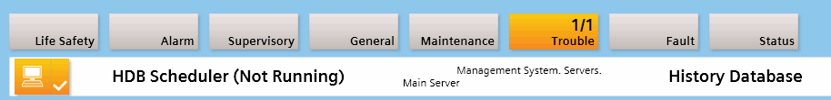
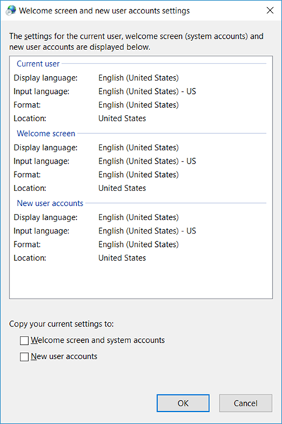
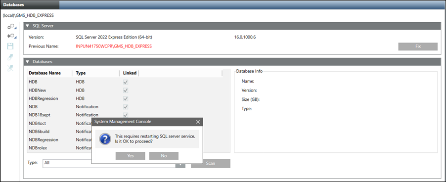
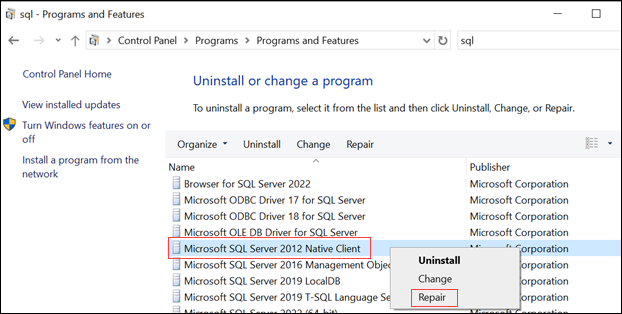

Troubleshooting the HDB, NDB and Long Term Storage (LTS)
The following are the most common errors and problems that occur when working with HDB and Long Term Storage. This section provides information related to their cause and methods to resolve them.
History Database is not Operating
Problem: The history database is not operating.
The following error message from the History Database can occur and display in Desigo CC (see the History Database Alarms table below)

Solution:
Perform the following steps to solve the issue:
- Exit the Desigo CC program.
- Start the System Management Console.
- Click Stop
 .
. - The database stops.
- Check whether the corresponding History Database is linked to the project.
- Click Start
 .
. - The database starts.
- Restart the Desigo CC program.
- Check the program to ensure proper operation.

NOTE:
Contact your database administrator or local partner support if problems with the History Database continue.
History Database Alarms | ||||
Object | Property | Messages | Alarm Values | Impact |
History Database | Settings Manipulated | Illegitimate Client Access | True | Unauthorised changes in HDB configuration can cause problems |
Database Fill Level | History Database Fill Level | > 95% | HDB accepts no more data - it is almost full | |
Task Processor | Maintenance Inactive | Disabling, Immediate Disabling, Disabled, Timeout, Disabling Timeout, Immediate Disabling Timeout | GMS HDB Service does not drive the HDB maintenance. This can cause corruption if lasting for a long time | |
Task Processor Usage | High Maintenance Load | > 95% | HDB maintenance tasks take very long. This may signal problems with SQL server performance/load | |
Archive Creation | Cannot Create Archive Slice | See information below the table [1] | An error in archiving stops data being written into HDB/archives. In a long term can cause corruption. | |
Archive Switch | Cannot Switch Archive Slices | |||
Archive Closing | Cannot Close Archive Slice | |||
Archive Migration | Cannot Migrate Data to Archive | |||
Archive Groups | Archiving | Storage not active | Yes | An error in archiving stops data being written into HDB/archives. In a long term can cause corruption. |
Archive Groups Custom | Archiving | Storage not active | ||
Attachments | Size Relative | Folder Size is Close to Limit | >= 85% | Possible problem with too little space for eventual new attachment files |
Folder Size is Exceeding Maximum Limit | >= 100% | |||
State | Folder Path Format Invalid | Invalid Path Format | Attachment storage cannot be used if the folder is not accessible | |
Folder Not Existing | Path Not Existing | |||
Folder Not Accessible | Path Not Accessible | |||
Backup | Backup Status | History Database | Failed | No HDB backup was created |
Reader | Connection Status | History Database | Not Connected | Cannot read data to/from HDB |
Writer | Connection Status | History Database | Not Connected | Cannot write data to/from HDB |
This information belongs to the table above [1], column Alarm Values:
No archive piece with required state available; Cannot create backup for an archive piece; Automatically administered archive piece database cannot be created; Manually administered archive piece database does not fulfill the prerequisites; Manually administered archive piece database not available; Failed to create infrastructure in archive piece database; Failed to increase size of archive piece database; Semaphore for initial backup is not free; Cannot switch to next archive piece; Failed to reorganize indices in closing archive piece; Failed to shrink archive piece database; Failed to configure final arc-piece; No current archive piece for migration available; Error writing to current archive piece during data migration; No existing or deactivated storage assigned to an archive group; Failed to create object summary in an archive.
Determining the Status of a Task
The Task Info expander under History Databases > [SQL Server Name] shows the task queue with the state of each task. Place your cursor over the task to see the tooltip.
The following table provides information on the different states.
State | Cause | Resolution |
| The server failed to perform a task. For example, the server could not create a backup. |
|
| The server failed to perform a task and therefore cannot proceed to the next task. For example:
|
|
SMC Does Not Connect to the Database
Problem: SMC Does Not Connect to the Database
Cause: If your hard disk (where the database is located) is encrypted with a software application, such as BitLocker, and you shut down and restart your computer, the SMC may not be able to connect to the database. The database may display the status Recovery Pending.
Solution: Perform either of the following:
- Restart the SQL Server instance.
- Take the database offline and bring it online again. From the main menu of the MS SQL Server Management Studio, select Task > Take Offline and then Task > Bring Online.
The SMC connects to the database.
NOTE:
If you need to encrypt the hard disk, use the SQL Server Enterprise Edition, which has Transparent Data Encryption (TDE).
History Database Creation Fails due to Mismatch in the Localization Settings
Problem: History Database creation fails with error.
Cause: History Database creation fails due to mismatch in the localization settings.
Solution: To confirm History Database creation to fails due to localization settings, do the following:
- Open Computer Management > Local Users and Groups > Groups > Administrators.
- Temporarily add SYSTEM to the Administrators group if not seen already and observe the display name for example, NT AUTHORITY\SYSTEM.
- If it mismatches with the one shown in SMC during History Database creation, for example,
NT-AUTORITÄT\SYSTEM then it is because of localization settings.
Perform the following steps to resolve the issue:
- Open Windows Control Panel > Region.
- In the window that displays select Administrative tab and click Copy settings.
- A Welcome screen and new user accounts settings window displays.
- Check if the settings in Current user, Welcome screen, New user accounts are identical.
- If not, select the two checkboxes to copy the current settings to Welcome screen and system accounts and to New user accounts and click OK.
- Re-launch SMC and create the History Database with a different name.

Troubleshooting the System Hostname in HDB and NDB
Problem:
If you have changed your system's hostname, then in SMC the SQL Server Instance still displays the Previous Name in red.
In SMC, wherever this old system's hostname is referred this creates connection problem with remote SQL server.
Solution:
After the system's hostname is changed, then in SMC you need to update SQL server instance name in Database Infrastructure > [SQL server instance].
- History Database and Notification Database is already created and available on selected server.
- Open Database Infrastructure > [SQL Server instance].
- In SQL Server expander, the Previous Name is highlighted in red color.
- Click Fix button.
The Fix button appears only when you have changed the system's hostname. Once the system's hostname is changed this Fix button disappears. - A message displays, click Yes to restart SQL server service.

- Restarting the SQL server service, internally updates the SQL Server Instance.
Data not Logging into the History Database
Problem: Data not logging into the History Database and creates the HD2 files with the following error message in the PVSS_II.log file.
Missing DB-Connection:
ODBC: State=IM008, Error=[Microsoft][SQL Server Native Client 11.0]Dialog failed
Solution: Repair the Microsoft SQL Server 2012 Native Client by navigating:
- Go to Control Panel > Programs and Features.
- Select Microsoft SQL Server 2012 Native Client and right-click
- Select Repair.
